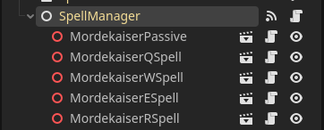
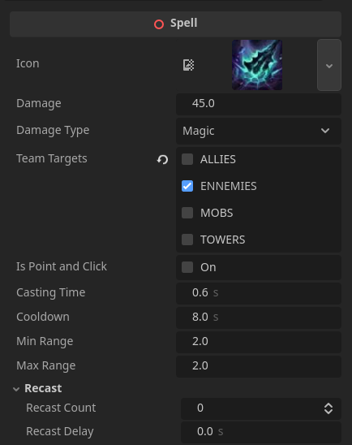

League of Godot
I wanted to make a multiplayer game prototype to learn more about networking, so I made League of Godot. This project is inspired by League of Legends.
Composition over inheritance
Composition is great for making modular games. The idea is to create small components that can be used anywhere.
Composition in Godot works by making a script inherit from a node such as Area3D (Trigger) or Control (UI), and communicating through signals. This workflow is great because it avoids having hard references.
For example, I made multiples components for the entities such as:
- Health Component - Manages health and life state. Everything useful is communicated through signals, such as when health reaches 0 (death) or when health changes.
- Health Display – A 3D progress bar that can be placed anywhere to show the current health of a Health Component.
- Spell Manager – A script that manages spell casting and cooldowns.
Spells
I'm using Godot Nodes for my spell system. I can easily manage the data and switch spell from a character to another.
Each spell is a node that can be added to the Spell Manager. The Spell Manager is a component that manages the cooldown and the casting of the spells.
Each spell has its data exposed to the editor, so I can easily change the amount of damage or what type of target the spell can hit.
Items
I’ve implemented the item system from League of Legends. Items can be purchased in the shop. The example below demonstrates an item that gradually increases movement and attack speed over time.
This is the code of the item (C#).
using Godot;
public partial class DoranSword : Accessory
{
private float _speedBonus = 0;
public override void OnHit(Entity entity, Entity damager)
{
entity.HealEntity(100);
}
public override void Tick(Entity entity, float delta)
{
_speedBonus += delta;
entity.BonusMoveSpeed += _speedBonus;
entity.BonusAttackSpeed += _speedBonus;
}
}Networking
The game’s networking works with a dedicated server, so each player is a client. The server has authority over the game, and the clients have authority over the inputs.
A dedicated server is a great way to prevent cheating and can easily be deployed on cloud servers.
I'm using Godot's multiplayer system to handle the networking. Each input is sent via RPCs.